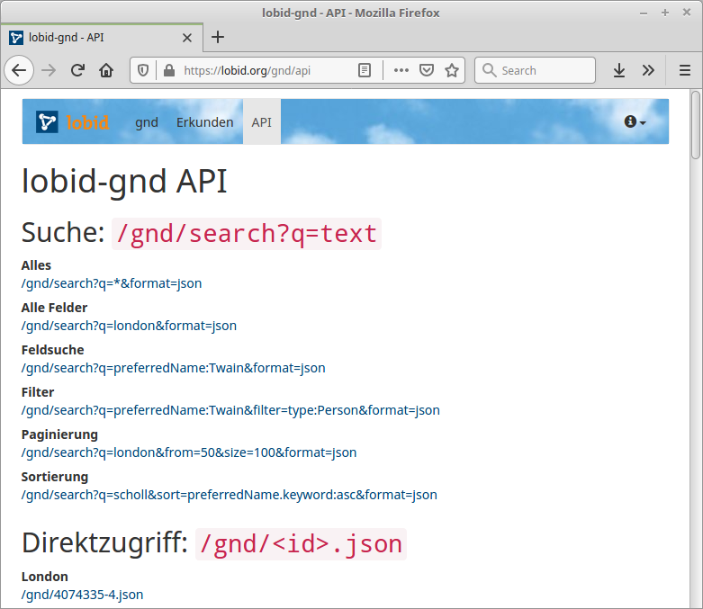

Web-Schnittstellen &
Linked Open Usable Data
LOUD mit JSON über HTTP
Adrian Pohl &
Fabian Steeg
Offene Infrastruktur,
Hochschulbibliothekszentrum NRW (hbz)

WWW, 2021-10-29
Präsentation beim Schnittstellen-Workshop mit der Klassik Stiftung Weimar
Diese Präsentation:
http://slides.lobid.org/2021-weimar/

Agenda
| 1. Vorstellung & Kontext | hbz, lobid-Dienste und Nutzung |
| 2. Linked Open Usable Data | LOUD, Web-APIs, JSON & JSON-LD; Daten und Abfragemöglichkeiten |
| 3. Addendum | Metafacture & SkoHub |
1. Vorstellung und Kontext

Hochschulbibliothekszentrum des Landes Nordrhein-Westfalen, seit 1973
Dienstleistungs- und Entwicklungseinrichtung für digitale Services in Hochschulbibliotheken
Einige Arbeitsbereiche: Verbundkatalog, Suchportal DigiBib, Fernleihe, Konsortiale Erwerbung
lobid steht für Linking Open Bibliographic Data
Seit fast zehn Jahren die zentrale Komponente der offenen Infrastruktur im hbz
Stellt intuitive, web-basierte Rechercheoberflächen und Schnittstellen bereit
lobid-Dienste
lobid-resources: Daten des hbz-Verbundkatalogs
lobid-organisations: Daten des deutschsprachigen Sigelverzeichnisses und DBS-Stammdaten
lobid-gnd: Gemeinsame Normdatei
lobid – ein zentraler Knoten bibliothekarischer Dateninfrastruktur

2. Linked Open Usable Data
Linked Data & JSON-LD
| Standards | Linked Data, RDF |
| APIs | JSON, JSON-LD, LOUD |
| lobid-gnd | Daten und Abfragemöglichkeiten GND |
Ziele
Überführung traditioneller bibl. Praktiken in das Web
Sichtbarkeit und Auffindbarkeit im Web erreichen
Nachnutzbarkeit ermöglichen
Synergieeffekte durch Verlinkung mit anderen Daten
Verbesserung der Recherchemöglichkeiten
Quelle: Pohl, Adrian / Ostrowski, Felix (2010): 'Linked Data' - und warum wir uns im hbz-Verbund damit beschäftigen." B.I.T. Online 13(3): S. 259-268. Preprint: http://www.hbz- nrw.de/dokumentencenter/produkte/lod/aktuell/pohl_ostrowski_2010_linked-data.pdfLinked Data: Best Practices
- Nutze URIs als Namen für Dinge
- Nutze HTTP-URIs, so dass Menschen sie aufrufen können
- Wenn jemand einen URI aufruft, biete nützliche Informationen an unter Nutzung der Standards (RDF, SPARQL)
- Nimm Links zu anderen URIs auf, so dass weitere Dinge entdeckt werden können.
RDF & The Semantic Web
– cutting edge seit 1999
Linked Data
Ultimately, RDF and the Semantic Web are of no interest to Web developers. They also have a really negative public perception problem. We should stop talking about them. Let’s shift the focus to be on Linked Data, explaining the problems that Web developers face today, and concrete, demonstrable solutions to those problems.– Manu Sporny, damals Vorsitzender der RDFa Working Group beim W3C, der JSON-LD Community Group & Mitglied weiterer Semantic-Web-Gruppen, beim Schreiben an der JSON-LD-Spezifikation
Sporny (2012)
Linked Open Data
Wissen ist offen, wenn jedeR darauf frei zugreifen, es nutzen, verändern und teilen kann – eingeschränkt höchstens durch Maßnahmen, die Ursprung und Offenheit des Wissens bewahren.http://opendefinition.org/od/2.1/de/
Linked Open Usable Data

Quelle: Rob
Sanderson auf Twitter
Siehe auch Rob Sanderson's Europeanatech 2018 Keynote (Slides, Aufzeichnung)
"Using data"?
Daten werden mit existierender Software bearbeitet (ausgewertet, ergänzt, integriert etc.)
Entwicklung neuer Software zur Interaktion mit Daten
LOUD: Orientierung auf Bedürfnisse und Konventionen rund um Software (Entwicklung, Standards, etc.)
Nützliche Daten: Zielgruppe kennen & eigene Angebote auf sie ausrichten
Hauptzielgruppe: Entwickler:innen oder Nutzer:innen von Software für Datenzugriff und -manipulation
Programmierschnittstellen
Nicht irgendwie Daten bereitstellen, sondern so, dass wir aus Software gut zugreifen können
z.B. möglichst einheitlich (statt viele Formate), möglichst stabil (statt häufige Anpassungen)
APIs machen Softwareentwicklung handhabbar
(für 1st- und 2nd-Party-Software)
APIs ermöglichen Nutzung und Integration
von 3rd-Party-Software
Zum Bsp. lobid-Formate und -Anwendungen

APIs entkoppeln Anwendungen von Datenquellen, Formaten und Systemen. Sie ermöglichen so modulare, zukunftsfähige Applikationen
z.B. 1st-Party:
NWBib-Suchergebnisliste

Anfrage gegen das NWBib-Subset in lobid-Verbunddaten
z.B. 2nd-Party:
Virtuelle Deutsche Landesbibliographie

z.B. 3rd-Party:
Abgleich und Anreicherung lokaler Daten in OpenRefine

Unter Nutzung von OpenRefine und der entsprechenden lobid Reconciliation-Schnittstelle (bzw. API)
Und wie APIs bereitstellen?
JSON über HTTP
Der Web-API-Standard seit Jahren, siehe z.B. Target (2017)
The Rise and Rise of JSON

Quellen: Google Trends, Web Data Commons, W3Techs
JSON
Ein einfaches Key-Value-Format für strukturierte Daten
Key ist immer ein String
Value ist String, Number, Boolean, Array oder Object
{ "foo": "bar" }
Beispiel: GET
https://lobid.org/organisations/DE-638
{
"url": "https://www.klassik-stiftung.de/",
"name": "Klassik Stiftung Weimar",
...
"collects": {
"type": "Collection",
...
"subject": [
"Weimarer Klassik",
"Moderne",
"Bauhaus"
]
},
...
JSON + Linked Data = JSON-LD

JSON-LD
"designed to be usable directly as JSON, with no knowledge of RDF" – Es ist richtiges JSON!
"also designed to be usable as RDF"
JSON
$ curl -H "Accept: application/json" https://api.github.com/users/acka47
{
"login": "acka47",
"url": "https://api.github.com/users/acka47",
"type": "User",
"name": "Adrian Pohl",
"company": "hbz",
"location": "Cologne, Germany",
"bio": "Metadata, RDF, vocabularies. Working at @hbz. "
}
JSON + @context + @id = JSON-LD
{
"@context": "http://schema.org/",
"@id": "https://github.com/users/acka47",
"login": "acka47",
"url": "https://api.github.com/users/acka47",
"type": "User",
"name": "Adrian Pohl",
"company": "hbz",
"location": "Cologne, Germany",
"bio": "Metadata, RDF, vocabularies. Working at @hbz. "
}
Warum nicht einfach JSON?
Usable heisst nicht nur dass die Daten strukturell gut nutzbar sind, sondern auch einige Vorteile von Linked Data mit sich bringen:
Implizite Dokumentation: Properties/JSON-Attribute haben URIs und ihre Bedeutung lässt sich nachschlagen
Interoperabilität: wer nicht nachnutzt, muss selbst spezifizieren -> Anreiz zur Nachnutzung gemeinsamer Datenmodelle
Things not strings: Präferenz von URIs über Strings führt zu Erstellung und Pflege von SKOS-Schemas für kontrollierte Wertelisten
Beispiel: lobid-gnd
Die Gemeinsame Normdatei (GND)
Normdatei für Bibliotheken im deutschsprachigen Raum
Datensätze für Personen, Körperschaften, Konferenzen & Veranstaltungen, Geografika, Schlagwörter, Werke
Für die formale Erfassung einer Ressource und für die inhaltliche Erschließung
In den letzten Jahren wird die GND vermehrt auch von Archiven, Museen und Wissenschaftler:innen genutzt
Formulierung von Suchanfragen
Daten per Oberfläche erkunden, UI und API verschiedene Sichten auf die gleichen Daten
Alle Suchen und Ressourcen können auch als JSON-LD betrachtet werden
Die Oberfläche

Auto Suggest

Ergebnisliste

Einzeltreffer

Die Daten
JSON-LD-Link

JSON(-LD)


Web-API
Suchsyntax: Beispiele
| Feldsuche |
|
| Boolsche Suche |
|
| Trunkierung |
|
| Intervalle |
|
| Existenz |
|
Alles kombinierbar
z.B. Personen, die 1772 bis 1832 geboren wurden und in Weimar gewirkt haben
z.B. Personen, die in Köln geboren wurden und in Weimar gestorben sind
Weitere Abfragemöglichkeiten
Für Einzeltreffer: RDF per Content Negotiation
3. Addendum
Wie erzeugen wir das beschriebene JSON-LD?
1. JSON-LD kann direkt im Hauptsystem erzeugt werden
2. Daten liegen schon als RDF vor: mit JSON-LD-Prozessor verarbeiten (import, frame, compact)
3. Daten liegen in einem anderen Format vor bzw. werden in einem anderen Format gepflegt: Datentransformation

Ein umfangreicher Werkzeugkasten für Datentransformations-Workflows
Entwickelt an der DNB, seit zwei Jahren Maintainerschaft beim hbz
Zwei grundlegende Weiterentwicklungen sind im Gange
Metafacture-Weiterentwicklung
Metafacture-Fix: Erleichterung der Konfiguration durch Bibliothekar:innen & Standardisierung
Metafacture-Playground für Tutorials und schnelles Ausprobieren von Workflows & Infrastruktur zum Teilen und Nachnutzen von Workflows im Web
SkoHub
Grundidee: neuartiger Push-basierter Discovery-Ansatz durch Subskription von Elementen eines kontrollierten Vokabukars
Produktiv wird derzeit nur SkoHub Vocabs benutzt für die einfache Publikation kontrollierter Vokabulare im Web
Weiterführende Informationen –
Rund um lobid und Linked Data
- lobid-Blog, Präsentationsfolien, lobid auf Twitter und Mastodon
- Kreutzer, Till (2011): Open Data – Freigabe von Daten aus Bibliothekskatalogen. Hg. v. Hochschulbibliothekszentrum des Landes Nordrhein-Westfalen (PDF)
- Pohl, Adrian / Steeg, Fabian / Christoph, Pascal (2018): lobid – Dateninfrastruktur für Bibliotheken. In: Informationspraxis 4(1). https://doi.org/10.11588/ip.2018.1.52445
- Sporny, Manu (2012): The Problem with RDF and Nuclear Power. URL: http://manu.sporny.org/2012/nuclear-rdf/
- Steeg, Fabian / Pohl, Adrian / Christoph, Pascal (2019): lobid-gnd – Eine Schnittstelle zur Gemeinsamen Normdatei für Mensch und Maschine. In: Informationspraxis 5(1). https://doi.org/10.11588/ip.2019.1.52673
- Target, Sinclair (2017): The Rise and Rise of JSON. URL: https://twobithistory.org/2017/09/21/the-rise-and-rise-of-json.html
Weiterführende Informationen – Nutzung von lobid-gnd
- Stefan Dumont: correspSearch: Neue Tools, neue Daten – und eine Auszeichnung https://dhd-blog.org/?p=10632
- Harald Lordick: Die Öffnung der GND und die historische Forschung: https://djgd.hypotheses.org/1511
- Harald Lordick & Beata Mache: Annotationen anhand der Gemeinsamen Normdatei aus einer anwendungsorientierten Perspektive historischer Forschung https://zenodo.org/record/1188230
- Christian Thomas: Humboldts ›Bekenntnisse‹ von 1801 nach der Original-Handschrift aus den Amerikanischen Reisetagebüchern im Deutschen Textarchiv der BBAW http://www.avhumboldt.de/?p=14447
- Christian Erlinger-Schiedlbauer et al.: Semantische Suchabfragen mit der Linked Open Data Cloud generieren https://www.societybyte.swiss/2018/10/24/semantische-suchabfragen-mit-der-linked-open-data-cloud-generieren/